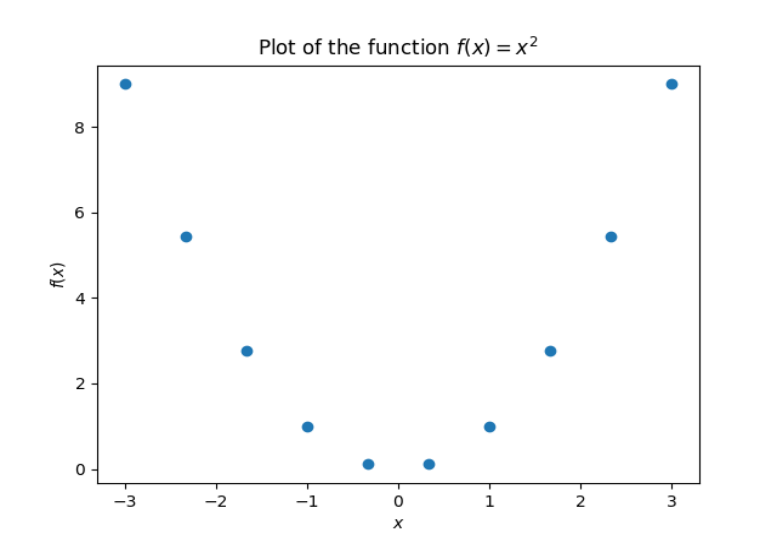

Python is used in programming the numerical methods because it has many
advantages:
It has very simple and intuitive syntax with powerful statements and data structures.
Numerous mathematical functions are defined in its standard and third party modules.
Vectors and matrices can be created and manipulated by means of operators and functions from the module NumPy.
Plotting functions of different plot types can be imported from the module matplotlib
SciPy is a comprehensive module of a large collection of numerical method functions in
various topics such as interpolation, integration, linear algebra, etc.
It is available for all main operating systems.
It has several integrated development environments (IDE) like IDLE, Spyder and PyCharm
with powerful code editing, execution and debugging capabilities.
Python and its standard and third party modules are available for free download.
To install click Here and for numerical
packages NumPy, SciPy and matplotlib you can download for free from http://pypi.python.org/.
Let us define and plot a simple function using python:
#import modules
import numpy as np
import matplotlib.pyplot as plot
#define function
def f(x):
return x**2
#generate x values
x = np.linspace(-3,3,10)
#evaluate the functions on the x-grid
y= f(x)
#plot y vs x
plot.plot(x,y, 'o')
#Set title and axes labels
plot.title('Plot of the function $f(x)=x^2$')
plot.xlabel('$x$')
plot.ylabel('$f(x)$')
#display the Plot
plot.show()
 first python plot
Science doesn't make it impossible to believe in God, it just makes it possible to not believe in God.